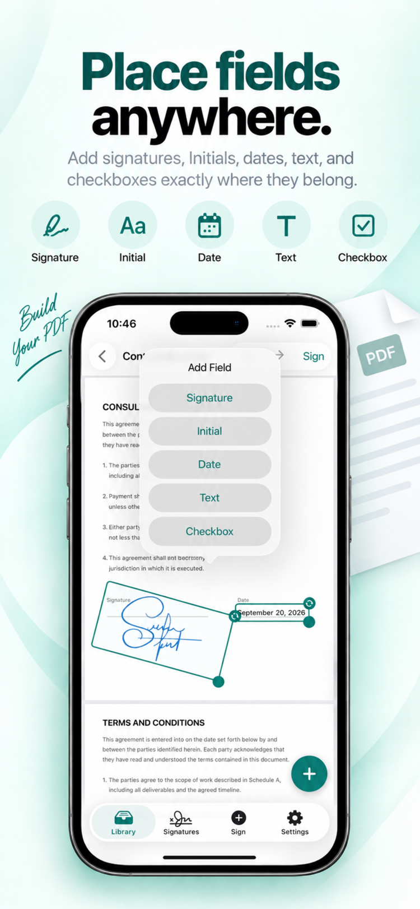
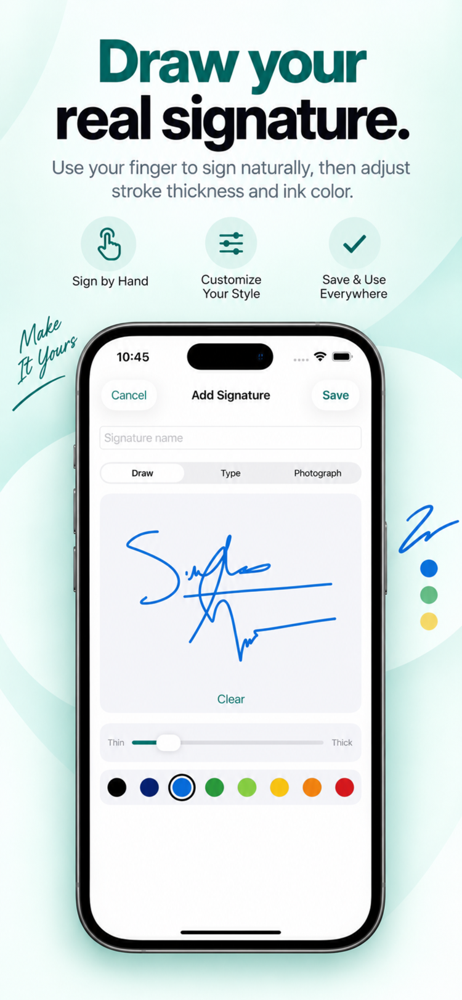
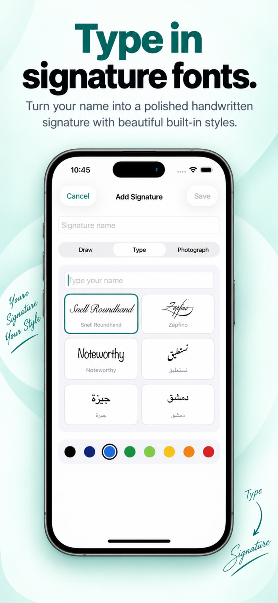
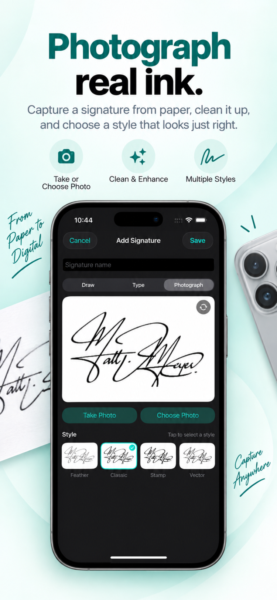
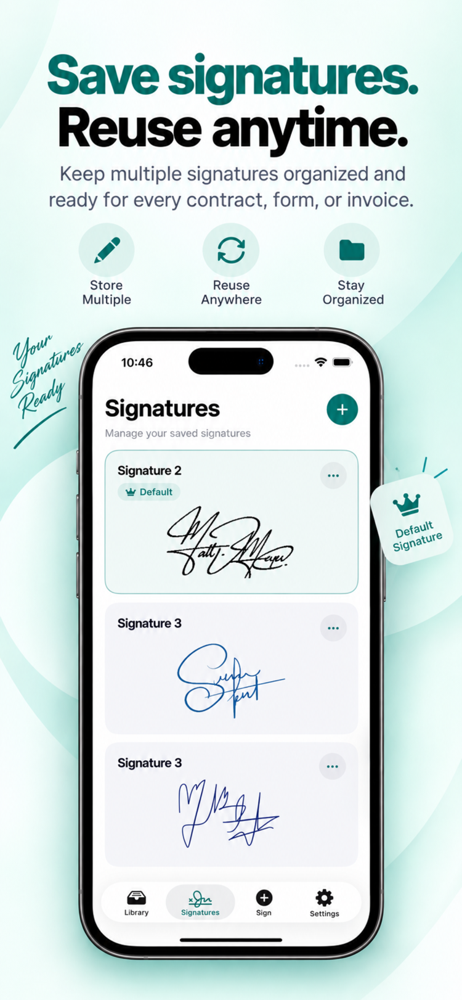
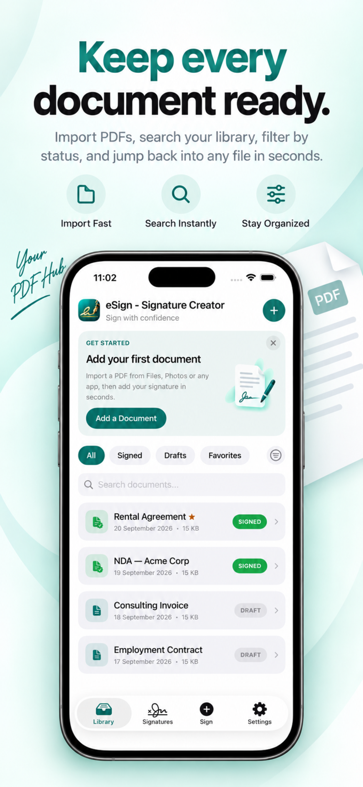

Place fields anywhere
Drop signatures, initials, dates, text, and checkboxes exactly where you need them.
Complete documents on your iPhone or iPad — fully offline, private, and ready in under a minute.

Powerful tools that stay simple — built for iPhone and iPad.
Drop signatures, initials, dates, text, and checkboxes exactly where you need them.
Adjust stroke thickness and ink color for a signature that looks like yours.
Choose from polished built-in styles, including Arabic fonts.
Capture a signature from paper, then clean and enhance it — Feather, Classic, Stamp, or Vector.
Store multiple signatures and set a default for one-tap signing.
Import PDFs, search instantly, and filter by Signed, Drafts, or Favorites.
Tap to add signatures, initials, dates, text boxes, and checkboxes anywhere on the page. Everything snaps into place.
Sign naturally with your finger or Apple Pencil. Fine-tune thickness and ink color until it feels like you.

Prefer to type? Pick from a set of polished signature styles, including dedicated Arabic fonts.

Sign on paper, then snap a photo. eSign cleans up the background and enhances the stroke automatically.

Keep as many signatures as you need, set a default, and sign new documents in a single tap.

Import PDFs from anywhere, find them instantly, and filter by Signed, Drafts, or Favorites.

A closer look at every step, from blank page to signed document.
eSign works completely offline, so your files stay exactly where they belong: with you.
Yes. eSign works completely offline — signing, editing, and saving all happen on your device, with no internet connection required.
Yes. eSign is built for both iPhone and iPad, with a layout that adapts to your screen.
eSign works with PDF files — the standard format for contracts, forms, and official documents.
Your signatures and documents are stored locally on your device. Nothing is uploaded to a server.
eSign creates handwritten and typed signatures suitable for many everyday documents. For documents with specific legal requirements, check the rules that apply in your country or industry.
Still need help? Contact us
Download eSign and sign your first document in under a minute.